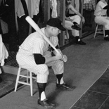

|
Notice: All Library of Congress research centers are closed to the public, and all on-site public programs are cancelled until further notice. Online resources and reference services, such as Ask a Librarian, will continue to be available during this time. For more information, see: www.loc.gov/coronavirus. | ||
|
About Collections & Services
Research Tools
What's Online |
2019 Recording Registry Sports Byline USA Collection 
LibGuides |
|
ATTENTION:
|
||
| Ask
a Librarian Want to ask the reference staff a question about recorded sound collections? |
||
|
The Recorded Sound Research Center provides access to the commercial and archival audio holdings of the Library of Congress. The collection dates from 1926 when Victor Records donated over 400 discs to the Library's Music Division to supplement its print and manuscript holdings. In the custody of the Motion Picture Broadcasting and Recorded Sound Division since 1978, the collection has grown to include over 2 million items encompassing audio formats from cylinders to CDs. The holdings complement the field recordings of the American Folklife Center and the moving image collections served in the Moving Image Research Center. | ||
| The
Library of Congress >> Researchers March 12, 2020 |
Legal | External Link Disclaimer |
Contact
Us: Ask a Librarian |